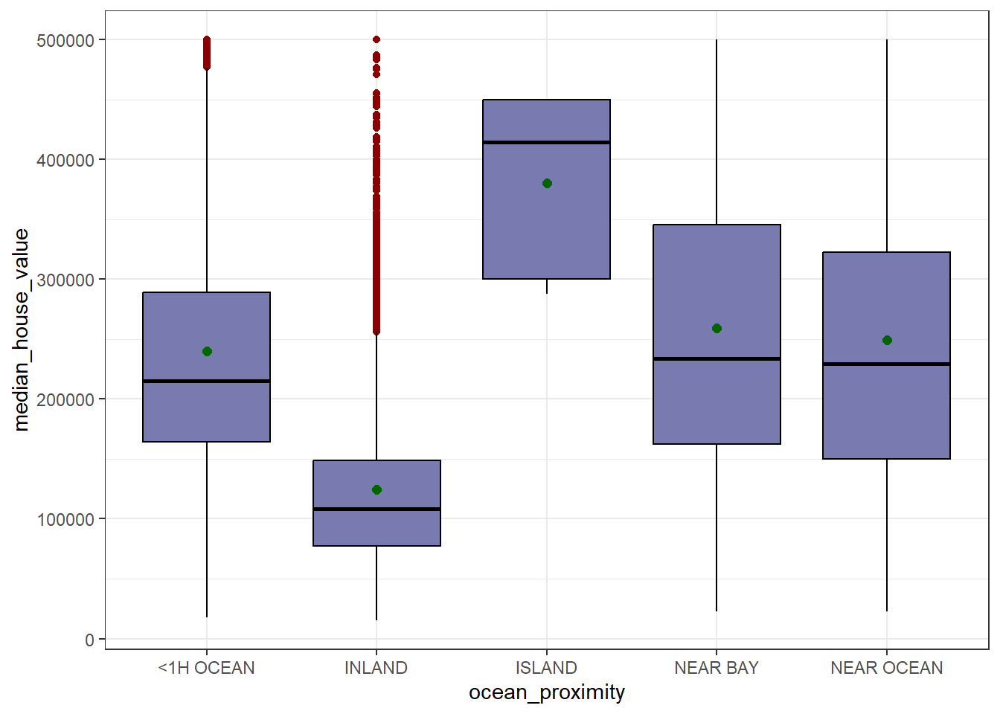

Chapter 5 Variable categórica ‘ocean_proximity’ (convertida en factor)
df %>%
count(ocean_proximity,name="n") %>%
mutate(Porcentaje=round((n/sum(n))*100,2),
variable='ocean_proximity',
categoria=as.character(ocean_proximity))%>% select(variable,categoria,n,Porcentaje)-> tabla_ocean
tabla_ocean %>%
kable(caption = " Caracteristicas de 'ocean_proximity'") %>%
kable_styling(bootstrap_options = c("striped", "hover", "condensed"),
full_width = TRUE) %>%
scroll_box(width = "100%")| variable | categoria | n | Porcentaje |
|---|---|---|---|
| ocean_proximity | <1H OCEAN | 9136 | 44.26 |
| ocean_proximity | INLAND | 6551 | 31.74 |
| ocean_proximity | ISLAND | 5 | 0.02 |
| ocean_proximity | NEAR BAY | 2290 | 11.09 |
| ocean_proximity | NEAR OCEAN | 2658 | 12.88 |
5.0.1 Diagrama de barras para variable numérica x variable categórica
tabla_ocean_b <- df %>%
count(ocean_proximity,name="n") %>%
mutate(Porcentaje=round((n/sum(n))*100,1),
Etiqueta= paste0(n,"(",Porcentaje,"%)"))
tabla_ocean_b %>%
ggplot(aes(x=ocean_proximity,y=n))+
geom_col(fill="#008b8b",width=0.6)+
geom_text(aes(label=Etiqueta),vjust=-0.5,size=4.5)+
facet_wrap(~'Distribución de la variable ocean_proximity')+
scale_y_continuous(expand=expansion(mult=c(0,0.15)))+
theme_bw()
El gráfico de barras muestra que la mayoría de las viviendas (44.3%) están a menos de una hora del océano, seguidas por las del interior (INLAND, 31.7%). Las categorías NEAR OCEAN (12.9%) y NEAR BAY (11.1%) tienen una proporción bastante menor, y ISLAND casi no aparece en el dataset (solo 5 registros, 0%), así que esta última categoría probablemente no aporte mucho al análisis por lo pequeña que es la muestra.
5.1 Ahora comparemos el valor medio de la vivienda según la proximidad al oceano
Compararemos nuestra variable respuesta con una variable categórica.
df %>%
group_by(ocean_proximity) %>%
summarise(n=length(median_house_value),
media=mean(median_house_value),
sd=sd(median_house_value),
mediana=median(median_house_value),
RIC=IQR(median_house_value),
Q1=quantile(median_house_value,0.25),
Q3=quantile(median_house_value,0.75),
minimo=min(median_house_value),
maximo=max(median_house_value),
asimetria=skewness(median_house_value),
curtosis=kurtosis(median_house_value)) %>%
kable(caption = " Valor medio de la vivienda según la proximidad al oceano ") %>%
kable_styling(bootstrap_options = c("striped", "hover", "condensed"),
full_width = TRUE) %>%
scroll_box(width = "100%")| ocean_proximity | n | media | sd | mediana | RIC | Q1 | Q3 | minimo | maximo | asimetria | curtosis |
|---|---|---|---|---|---|---|---|---|---|---|---|
| <1H OCEAN | 9136 | 240084.3 | 106124.29 | 214850 | 125000 | 164100 | 289100 | 17500 | 500001 | 0.9863061 | 3.322787 |
| INLAND | 6551 | 124805.4 | 70007.91 | 108500 | 71450 | 77500 | 148950 | 14999 | 500001 | 2.1057182 | 9.323030 |
| ISLAND | 5 | 380440.0 | 80559.56 | 414700 | 150000 | 300000 | 450000 | 287500 | 450000 | -0.3260839 | 1.221882 |
| NEAR BAY | 2290 | 259212.3 | 122818.54 | 233800 | 183200 | 162500 | 345700 | 22500 | 500001 | 0.5439128 | 2.288615 |
| NEAR OCEAN | 2658 | 249434.0 | 122477.15 | 229450 | 172750 | 150000 | 322750 | 22500 | 500001 | 0.6233459 | 2.455190 |
5.1.1 Grafico de cajas y bigotes para comparar ‘median_house_value’ y ‘ocean_proximity’
df %>%
ggplot(aes(x=ocean_proximity, y=median_house_value))+
geom_boxplot(fill="#797bb0", color="black",outlier.color="darkred")+
stat_summary(fun=mean, geom='point', shape=20, size=3, color="darkgreen")+
theme_bw()
Este boxplot compara el valor de vivienda según qué tan cerca está del océano y se ven diferencias claaras entre categorías. INLAND tiene los precios más bajos y menos dispersión, aunque con varios outliers hacia arriba. ISLAND, a pesar de tener solo 5 registros, tiene la mediana más alta, cerca de los 425,000, aunque no es muy representativa por lo pequeña que es la muestra. Las categorías <1H OCEAN, NEAR BAY y NEAR OCEAN tienen medianas y dispersiones parecidas entre sí, entre 200,000 y 230,000 aproximadamente, lo que sugiere que estar cerca del mar directamente no marca tanta diferencia como la que sí hay entre estar en el interior (INLAND) o no.